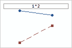
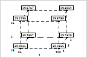

Use 1: To display the mean response for
all levels of one or more factors
The quality manager for an online shoe store conducts a designed
experiment to determine which factors affect the time to process an
order. She identifies three statistically significant factors and
wants to graph the results to show to the management team.
Use factorial plots to visualize how the factors
affect the response.
Main Effects Plot
Displays the mean response at each level of each
factor.
|
| Interactions Plot
Displays the mean response at each combination of
levels from two factors.
|
| Cube Plot
Displays the mean response at each factor level
combination for up to eight factors.
|
Use 2: To find the best operating
conditions
An industrial engineer wants to find the settings of synthetic
polymer, processing technique, and processing temperature to
maximize the breaking strength of a plastic packaging material.
Contour Plot
|
Surface Plot
|
Use contour and surface plots to find the factor
level settings that provide the response you want. Both plots show
how the response variable is affected by some of the factors while
holding others constant. For a more complete interpretation,
examine both the contour and surface plots.
| Note
|
A tutorial is also available on the Response Optimizer, a tool that helps to identify
the combination of input variable settings that jointly optimize a
single response or a set of responses. |